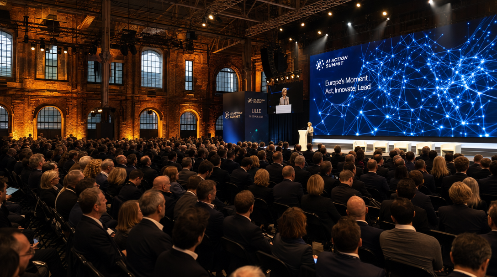
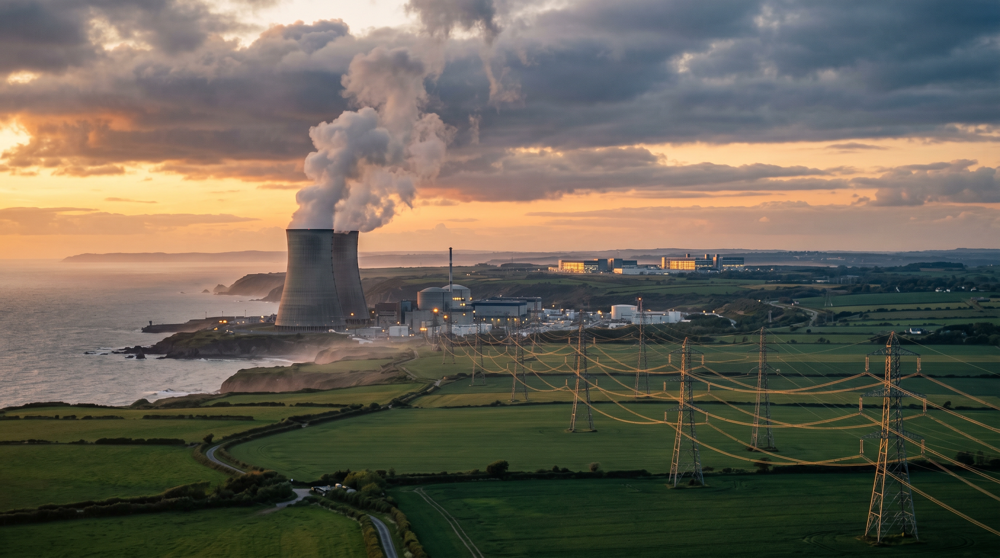

04–05 · L'événement : le sommet « L'IA avec nous » (Lille, 12 juin 2026)
06–07 · Les déclarations : la vision, la formule
08–10 · La stratégie : carte des sites, milliards investis, pari de l'emploi
11 · Énergie & environnement : Gravelines et la chaleur fatale
12 · Les critiques : la « Ch'tilicon Valley » en question
13 · Synthèse : ce qu'il faut retenir
14 · Sources complètes
L'homme · 40 ans de politique
Qui est Xavier Bertrand ?
1965
Naissance à Châlons-sur-Marne. Agent d'assurances, engagé en politique dès 16 ans
2002
Député de l'Aisne (réélu en 2007 et 2012)
2005–07
Ministre de la Santé (gouvernement Villepin)
2007–12
Ministre du Travail (gouvernement Fillon) · secrétaire général de l'UMP 2008–12
2010–16
Maire de Saint-Quentin
2016
Président de la Région Hauts-de-France — il renonce à ses autres mandats
2021
Réélu · candidat à la présidentielle 2022
Élu d'un territoire post-industriel — mines, textile, sidérurgie —, il construit sa marque politique sur le travail et la réindustrialisation.
Sa méthode : attirer les giga-investissements par filières. Hier la « vallée de la batterie » (gigafactories de Douvrin, Dunkerque…), aujourd'hui la « vallée de l'IA ».
Hauts-de-France~6 M d'habitantsRéindustrialisationEmploi
L'événement · 12 juin 2026 · EuraTechnologies, Lille
Le sommet européen « L'IA avec nous »
+ de 1 500 participants : décideurs politiques européens, grands patrons de la tech, industriels, chercheurs, économistes
Positionné comme l'« acte II » du Sommet de Paris sur l'IA — « l'IA au cœur du réel »
Trois fils rouges : innovation, souveraineté, confiance
Et une promesse démocratique : une IA « qui ne laisse personne au bord du chemin »

Vue d'artiste — image générée (GPT Image 2)
Au programme : souveraineté (OVHcloud, Scale AI…), IA et travail (France Travail, Google France, CFDT), data centers et réindustrialisation (SoftBank, Data4, Nvidia, RTE), culture (SACEM), défense (Josep Borrell). À l'ouverture : la ministre Anne Le Hénanff, la vice-présidente de la Commission Henna Virkkunen, Bruno Bonnell — et Thierry Breton en plénière.
Sources : programme officiel ia-avecnous.fr (PDF, plénière Atrium) · Préfecture du Nord · L'Essentiel · La Gazette France
L'événement · la journée vue du podium
Une dramaturgie réglée au cordeau
08h30
Ouverture — « Lille, acte II de l'IA après Paris » (ministre, Commission européenne, France 2030)
09h50
Souveraineté : « quand la France trace sa propre voie » (OVHcloud, H Company, Numeum…)
10h30
Grande plénière prospective : « Le monde d'après ? » — économie, anthropologie, révolution industrielle
12h15
TEMPS FORT — intervention de Xavier Bertrand, président de la Région Hauts-de-France
14h15
« L'IA vraiment avec nous ? » — emplois, éducation, formation
15h40
Data centers et réindustrialisation — SoftBank, Data4, Nvidia, RTE : « le nouveau pacte territorial de l'IA »
18h00
Clôture officielle — intervention exceptionnelle en visioconférence
L'intervention de Bertrand est placée en « séquence officielle », juste avant le déjeuner : c'est lui qui incarne le sommet — et la séquence data centers de 15h40 reprend mot pour mot ses thèmes : emplois, chaleur fatale, souveraineté énergétique.
Source : programme officiel du sommet, ia-avecnous.fr (juin 2026)
Déclaration nᵒ 1 · la vision
« Faire des Hauts-de-France une vallée de l'IA, ce n'est pas seulement accueillir des technologies. C'est faire en sorte que l'intelligence artificielle serve l'emploi, la compétitivité, les services publics et les habitants. »
— Xavier Bertrand, sommet « L'IA avec nous », Lille, 12 juin 2026
Et d'ajouter : « Les Hauts-de-France ne veulent pas regarder passer la révolution de l'intelligence artificielle. Nous voulons y prendre toute notre part. »
Sources : ICI Hauts-de-France · La Gazette France · Préfecture du Nord (juin 2026)
Déclaration nᵒ 2 · la formule-récit
« On passera des mines à l'intelligence artificielle. »
— Xavier Bertrand, interview BFMTV (2026)
Une phrase calibrée pour l'histoire régionale : après le charbon et après la « vallée de la batterie », l'IA devient le troisième acte industriel du Nord. Le storytelling épouse la géographie : terrils d'un côté, serveurs de l'autre.
Film généré (Kling 3.0) — du chevalement de mine au campus IA
Source : HorizonActu — « Il y aura plusieurs data centers dans les Hauts-de-France » (juin 2026)
La stratégie · le territoire
8 sites sur 30 : la carte du pari
Sur les 30 sites français retenus pour accueillir des data centers, 8 sont en Hauts-de-France — déclaration de Bertrand sur BFMTV
Lille / EuraTechnologies : la vitrine, le sommet, l'écosystème French Tech
Cambrai : le navire amiral — méga data center de 1 gigawatt
Gravelines, la chaleur fatale et la réponse aux critiques
L'atout énergie : l'électricité nécessaire serait « facilement accessible », fournie par la centrale nucléaire de Gravelines — la plus puissante d'Europe de l'Ouest
Le foncier : des terrains disponibles, héritage des friches industrielles
La chaleur : la chaleur excédentaire des data centers « doit être renvoyée vers les réseaux de chaleur urbains » — réponse anticipée aux critiques environnementales

Vue d'artiste — image générée (Nano Banana 2)
La « réinjection de chaleur fatale » figure noir sur blanc au programme du sommet (15h40). Reste l'équation brute : 1 GW pour un seul site, l'équivalent d'un réacteur entier mobilisé pour le calcul.
Sources : HorizonActu · programme officiel du sommet (table ronde « Data centers et réindustrialisation ») · ICI (2026)
Contrepoint · ce que disent les sceptiques
La « Ch'tilicon Valley » en question
Ce que promet Bertrand
300 à 700 emplois par data center, « plusieurs milliers » au total
≈ 4 000 emplois directs et indirects à Cambrai
Une région « pleinement actrice » de la révolution IA
Ce que répondent le terrain et les chiffres
Une enquête Trendeo (citée par Les Échos) compte plutôt 2 800 emplois directs — pour toute la filière
À Cambrai, les habitants doutent : « ça m'étonnerait que ça amène de l'emploi ici » (Anne, 73 ans) ; les data centers recrutent « des postes assez pointus »
« Si c'est pour générer des vidéos de chatons mignons, c'est pas la peine » (Jovanni, 29 ans)
Au comptoir, on ironise sur la « Ch'tilicon Valley »
Source : Synth Media — « Data centers et emploi : à Cambrai, personne ne croit en une Ch'tilicon Valley » (2026) · Les Échos / Trendeo
Synthèse
Ce qu'il faut retenir
Un récit : « des mines à l'IA » — l'intelligence artificielle comme troisième révolution industrielle du Nord, après le charbon et les batteries
Une doctrine : l'IA n'est légitime que si elle « sert l'emploi, la compétitivité, les services publics et les habitants » — l'IA « avec nous », pas contre nous
Une méthode : attirer les capitaux mondiaux (SoftBank, Brookfield, Data4) avec trois atouts — énergie nucléaire, foncier, position géographique
Un risque : l'écart entre les milliers d'emplois promis et les besoins réels d'une infrastructure peu intensive en main-d'œuvre locale
Un agenda politique : à 61 ans, l'ancien candidat à la présidentielle s'installe en chef de file territorial de l'IA française